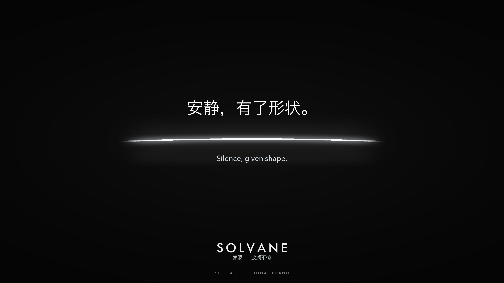

P. ÆVRYX · SPEC FILM
SOLVANE 索澜《静的形状》
汽车品牌概念片 · 虚构品牌
让安静被看见：声波线随城市噪声跳动，勾勒天际线，在静音中归于平直，最终化为贯穿式车灯。
创意与表达
围绕“让安静被看见”构思 30 秒品牌片，以音轨驱动的声波线串联城市噪声、陆家嘴天际线、静音与贯穿式车灯，完成“安静，有了形状”的视觉表达及中英双语文案。
画面生成与镜头修正
与 Agent 协作设定双色猎装车造型，使用 Nano Banana Pro、Google Flow / Veo 3.1 制作参考图与镜头素材，检查车辆外观、地标及画面瑕疵；车门镜头两次失败后，改用车外视角与首尾帧方案。
声音、合成与 Agent 协作
与 Agent 协作使用 Python、FFmpeg 完成声波图形、画面合成及声音剪辑；根据审片结果调整音乐收尾、去除车内人物，并重剪 15 秒版以突出产品。
多版本制作与交付
输出 30 秒主片及无字版、15 秒横竖版、6 秒短版、4K 主视觉，以及不同响度目标的混音与音乐、音效、环境声分轨。
主视觉

个人概念广告，品牌与车型为虚构设定，未实际投放。此处展示现有 15 秒剪辑版的轻量预览；30 秒完整版及更详细的制作材料可按需提供。
前往文字作品页 →